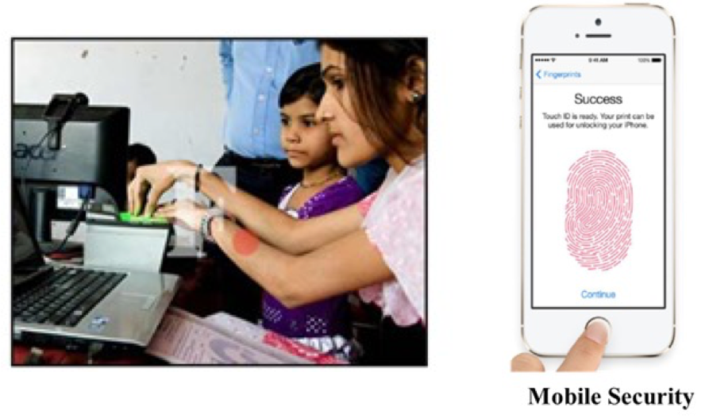
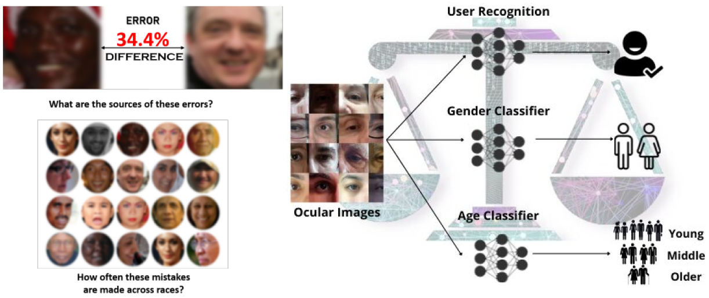
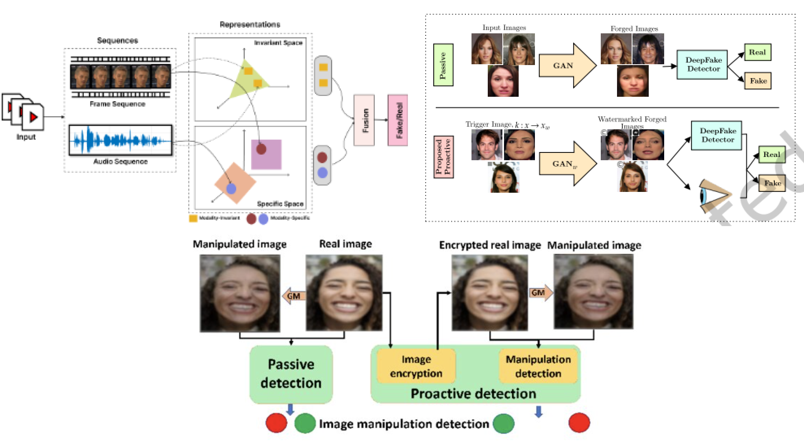
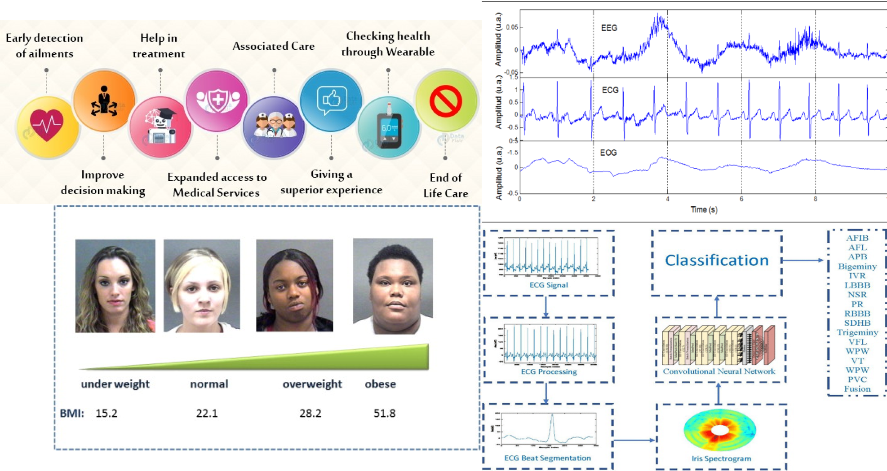
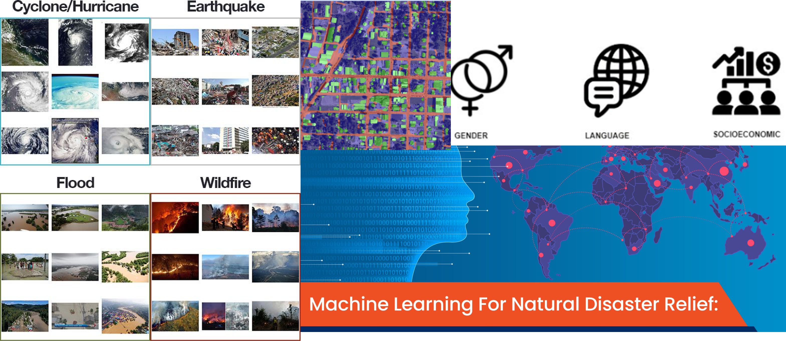
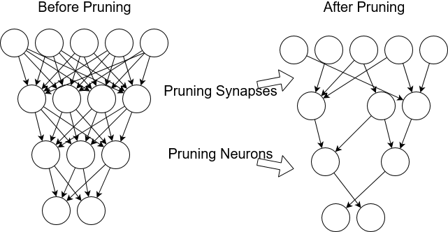

 Biometric systems identify a person based on physiological traits, such as fingerprints, hands, facial features, and iris patterns, or behavioral characteristics that are learned or acquired, such as how a person signs, types, or walks. A new class of behavioral biometrics is called “hidden” biometrics, since they cannot be seen at the level of the naked eye. Biometrics of the kind are the electrical signal of the brain (EEG), the muscle (EMG) or the heart (ECG), as well as other measurements from the “hidden” part of the human body, already adopted in biomedical applications or even forensic ones (e.g. the polygraph).
 Bias and fairness in AI are two sides of the same coin. While there is no universally agreed upon definition for fairness, we can broadly define fairness as the absence of prejudice or preference for an individual or group based on their characteristics. Automated gender classification has important applications in many domains, such as demographic research, law enforcement, online advertising, as well as human-computer interaction. Recent research has questioned the fairness of this technology across gender and race. Majority of the studies raised the concern of higher error rates of the face-based gender classification system for darker-skinned people like African-American and for women. The aim of this work is to investigate the differential performance of the gender classification algorithms across gender-race groups.
 Multimodal audio visual deepfakes that collectively focus on audio and visual data for manipulation are an emerging threat. Existing multimodal (audio-visual) deepfake detectors often based on the fusion of the audio and visual streams do not account for the heterogeneous nature of the audio and visual signals. This poses a significant challenge in effective fusion and optimum performance. In this work, we tackle the problem at the representation level to aid the fusion of audio and visual streams for multimodal deepfake detection.
 Electrocardiograms (ECGs) a medical monitoring technology recording cardiac activity, are widely used for diagnosing cardiac arrhythmia. The diagnosis is based on the analysis of the deformation of the signal shapes due to irregular heart rates associated with heart diseases. Due to the infeasibility of manual examination of large volumes of ECG data, this work aims to propose an automated AI-based system for ECG-based arrhythmia classification. Due to an alarming trend related to obesity affecting 93.3 million adults in the United States alone, body mass index (BMI) and body weight have drawn significant interest in various health monitoring applications. Consequently, several studies have proposed self-diagnostic facial image-based BMI prediction methods for healthy weight monitoring. This work also aims to develop a lightweight facial patch-based ensemble (PatchBMI-Net) for BMI prediction to facilitate the deployment and weight monitoring using smartphones.
 Natural disaster assessment models encompass various techniques, including event detection and burst detection, to swiftly recognize and analyze disaster occurrences using social media data. Event detection involves identifying both large-scale disaster events and smaller sub-events, such as road closures, through supervised learning and probabilistic spatiotemporal models applied to social media posts. Meanwhile, burst detection methods monitor sudden spikes in disaster-related keywords on social media platforms to signal potential events, although they may overlook events in less populated areas or where access to communication technologies is limited, reflecting disparities in user demographics and posting behavior.
 On-device AI is necessary due to the limitations posed by resource-constrained mobile devices when deploying complex deep learning models, such as convolutional neural networks (CNNs), for tasks like ocular-based user recognition. With millions of parameters and computations, traditional CNN models demand significant space and computational power. However, studies have explored methods like knowledge distillation and neural network pruning to obtain compact CNN models suitable for mobile deployment. This research evaluates five pruning methods and compares them with knowledge distillation for on-device CNN inference and mobile user verification using ocular images, finding that knowledge distillation outperforms pruning methods in terms of verification accuracy and real-time inference on various mobile devices.